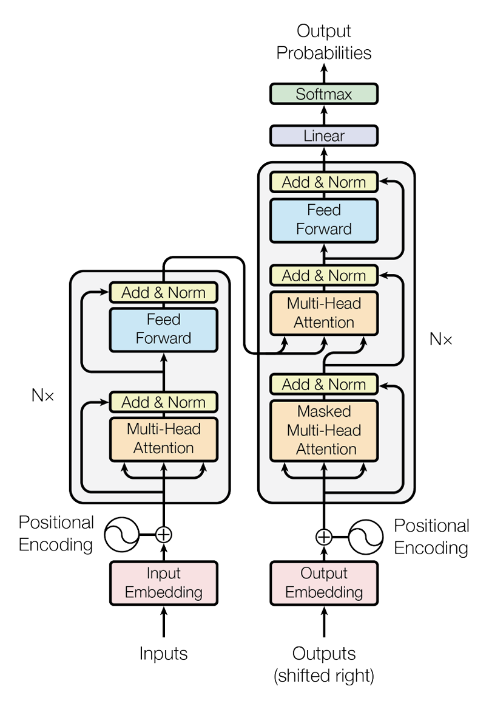
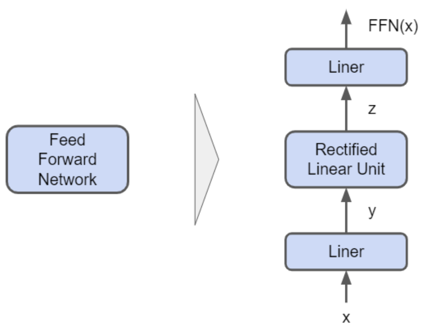
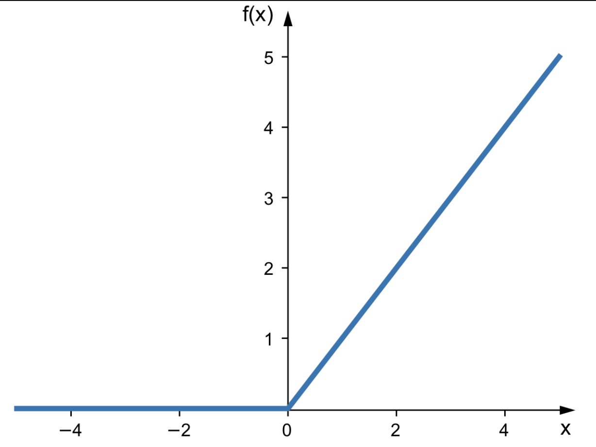

Transformers¶

The above diagram shows the transformer architecture. The transformer follows this overall structure using stacked self-attention and point-wise, fully connected layers for both the encoder and decoder.
Component 1: Input Embedding & Positional Encoding¶
Structure¶
(1) Tokenization¶
- to allow machines to understand human language, the words first go through a tokenizer
- this tokenizer gives every sub-word, punctuation, start and end of sentences a unique integer
- example:
101-->[CLS](means start of a sentence)4972-->cat- if its banana, it will be split into sub-words
'ba','na','na', each with their own tokens
- After every element in the sentence recieves a token, the shape is
(4, 10)
(2) Embedding Layer¶
- this input tensor then pases through the embedding layer (entering the model)
- Assuming our input is in batches of 4 sentences
- each sentence contains 10 words (therefore 10 tokens)
- Inside this layer, contains a 'lookup table' (master cheat-sheet matrix) that the model keeps in its memory
- this table has 1 row for every unique integer ID given to every token
- each row contains a long vector of continuous decimals or floating point numbers/floats (e.g. 512 numbers)
- when a word (with integer
4972) passes through this gate, the embedding layer uses it like a row address - it read the
4972and then finds this number in the address book - it then returns the full long vector of continuous decimals (float)
- the 512 numbers per word (per integer ID) is what the model learns during training
- after leaving the embedding layer, the new tensor shape is
(4, 10, 512)4is the 4 sentences in this single batch10represents the 10 words in a single sentence512represents 512 floats (forming a long vector) in a word
(3) Positional Embedding¶
2 ways: - (1) Sinusoidal Positional Embeddings (Original 2017 Transformer) - (2) Learned Positional Embeddings
(1) Sinusoidal Positional Embeddings (Original 2017 Transformer):
- the model generates 512 floats for different token positions on the fly using strict sine and cosine math wave formulas
- if we only use 1 cosine/sine, we might get the same positional embedding for e.g. token 2 and token 13, because sinusoids are continuous
- Using both sine and cosine means that shifting from position \(pos\) to position \(pos + k\) corresponds to a fixed rotation that depends only on \(k\)
- The attention mechanism which is built on linear operations, can therefore easily learn to attend by relative offsets, since "look \(k\) tokens back" is the same linear transformation everywhere in the sentence
- by using sine and consine, we can also restrict each position to -1 and 1 (just a bonus)
- since our word vector has 512 slots (512 unique floating point numbers per word)
- we have 512 unique dimensions which gets its own sinusoid at its own frequency therefore, each and every 512 positional embeddings are unique and different from each other
- PE --> positional encoding
- pos is the unqiue position
- this forms a single 512 dimensional positional vector for that specific position (and many other positions)
(2) Learned Positional Embeddings:
- Just like how there is a look up for each specific integer token
- We have a look up for positions in a single sentence
- Meaning, 3rd word has a vector representation of
(0,25, -1.42, ...), spanning a length of the same 512 floats - we add each word's vector representation with the positional embeddings of the same shape
- note that for learned positions, the table is limited to a maximum sequence length of 512 or 2048 rows
- similarly, this look up table that contains all these values, are learned and improve with training
- all tokens now is a vector in a N-dimensional vector space that also their individual psoitional embeddings
- In this space, these words or discrete text tokens have continuous, high dimensional vectors
- words with similar contextual meanings sit close to one another in this vector space
Component 2: Multi-Head Attention (MHA)¶
Structure¶
- attention is all you need indeed
- self-attention forces every single word vector to calculate a "relationship score" with every other word vector in the sentence at the same time
Step A: Creation of Q, K, V¶
- our tokens with positional embeddings are named \(X\) and shaped
(4, 10, 512)
4 is the 4 sentences in this single batch, 10 represents the 10 words in a single sentence, 512 represents 512 floats (forming a long vector) in a word
- Inside the Multi-Head Attention layer, are 3 independent, trainable weight matrix grids: \(W_Q\), \(W_K\), \(W_V\)
- Each grid has a layout of 512 rows × 512 columns
- the columns transform into 3 specialized vector descriptions per token:
- All 3 layers maintain a structure of
(4, 10, 512)
Step B: Splitting into Heads¶
- The model doesn't calculate across all 512 columns in one single block
- that would force the model to focus on only one global relationship pattern at a time
- instead it splits the 512 columns into 8 seperate heads
- For every word, column 0-63 goes into Head 1, columns 64-127 goes to Head 2, and so on
- Each head is an independent processing channel of dimension \(d_k = 64\).
- we split the 512 descriptive float slots into 8 independent groups (Heads)
- data shape transforms to
(4, 8, 10, 64)
4 independent sentences, 8 parallel processing paths, 10 words in each path, each word now has only 64 descriptive floats inside that specific path
Step C: Creating the Word Relationship Grid (\(Q \times K^T\))¶
- starting shape: \(Q\) is
(4, 8, 10, 64)and \(K\) is(4, 8, 10, 64) - now we calculate how much attention each word should pay to every other word
- We take query matrix and multiply it the the transpose of Key matrix
- Traspose so that we can perform matrix multiplication (need to satisfy the shape requirement)
- Ending shape:
(4, 8, 10, 10) - if we look at a single head for a single sentence, we are essentially multiplying
(10 x 64)(remove the 4, 8 part) by(64 x 10)(cos its transposed) giving us(10 x 10) - this is a flat
10 x 10grid that compares word 1 to word 2, ..., word 10 - the shape
(4, 8, 10, 10)means that we have 4 sentences and 8 unique relationship maps, each sized as a flat 10 x 10 grids
Step D: Softmax Percentage Weighting¶
- apply softmax to each values in all the 10 x 10 grids
- it just converts these scores to lie between 0 and 1, and adding them up to 100%
- This is now our Attention Weight Matrix
- Shape remains the same of
(4, 8, 10, 10)
Reminder: Immediately before applying the Softmax function, the model divides the raw scores by \(\sqrt{d_k}\) (which is \(\sqrt{64} = 8\)). This is called Scaled Dot-Product Attention. Without this downscaling, the numbers inside the matrix multiplication would grow too large, causing the Softmax function to clip and freeze the training process.
Step E: Extracting the Information (Scores \(\times V\))¶
- Starting Shapes: Weights are
(4, 8, 10, 10)and Values (\(V\)) are(4, 8, 10, 64) - We take our percentage map (10 x 10) and multiply it by the actual data payload values (\(V\)) which have a size of (10 x 64)
- The Math: Look at a single head's operation:
- Ending Shape:
(4, 8, 10, 64)
Step F: Concatenation¶
- Starting Shape:
(4, 8, 10, 64) - We are done with our 8 separate channels
- We want to bring the data back to its original global structure
- So now we take the 8 heads and concatenate (glue) their columns back together side-by-side and then multiply it with a learnable output matrix \(W_O\)
- 8 heads \(\times\) 64 floats per head \(=\) 512 total floats per token (meaning 512 features per word)
- Ending Shape:
(4, 10, 512)
Component 3: Layer Normalization & Residual Connections¶
Structure¶
- This is the
Add Step(Residual or skip Connection) and aNorm step(Layer Normalization) Add Stepallows for un-mutated bypass highway that takes the original input tensor from before the attention layer (Q, K, V) and adds it directly to the output after the attention layer- the residual concept is similar to the residual in ResNet architecture
- this preserves the original word identities and allows gradients to flow backwards during training completely unobstructed
Norm Steprecalculates the distribution of the float values across the embedding channle sfor each word, forcing them back into a unified range- this keeps the scale of data perfectly bounded
Step A: The Residual Skip¶
- Before entering Multi-Head Attention, our tensor copy \(X\) (shaped
(4, 10, 512)) branches off into 2 paths - Path A goes into MHA
- Path B acts as an identity shortcut, travelling past the attention block
- This means float #1 of Word 1 in Sentence 1's original vector is added directly to float #1 of Word 1 in Sentence 1's attention-updated vector. The shape stays perfectly static at
(4, 10, 512)
Step B: Layer Normalization (Standardizing the Sliders)¶
- the model looks across the 512 embedding feature columns for each individual word row
- For one single word row (a vector of 512 floats), it calculates:
- Mean (average value) of those 512 floats
- Variance (how far spread out the numbers are from the average)
- Subtracts the mean from each float and divides by the standard deviation, This is the formula for normalization learned in JC, (X-mean)/std
- this centers the numbers, forcing the average of all feature values to 0.0 and the standard deviation to 1.0
- Tuned Scaling: Finally, it multiplies each float by a trainable scaling parameter (\(\gamma\)) and adds a trainable shifting parameter (\(\beta\))
Mathematical Representation¶
The entire interaction of this section can be neatly summarized using standard algebraic notations:
Where the internal row normalization of a single vector component \(x_i\) is defined as:
Note: \(\epsilon\) is a tiny constant like 1e-5 added to the denominator to prevent a mathematical crash if the variance happens to be exactly zero
Component 4: Position-Wise Feed-Forward Network (FFN)¶

The final primary processing stage inside a single Transformer layer.
Structure¶
- MHA is good at exchanging information between words, but it only performs linear operations (matrix multiplications and weighted averages)
- A network restricted to linear math can only learn simple combinations of features, rendering it incapable of processing deep, abstract language logic or complex factual knowledge
- FFN applies non-linear math operations to every vector individually
- it maps 512 features into a much larger space, applies math activation functions to filter out irrelevant signals and projects back down
Step A: Dimensional Expansion¶
- FFN contains a pair of trainable linear parameter grids
- first grid \(W_1\) has a physical layout of 512 rows × 2048 columns
- 512 rows represents the 512 floating values per word
- Every word's 512 descriptive traits are multiplied and combined into a broad array of 2048 hidden feature traits
- this is basically expanding the amount of features per word
Step B: Injecting Non-Linearity (The Activation Gate)¶
- The expanded tensor of 2048 columns is immediately passed through a non-linear activation function, such as ReLU (Rectified Linear Unit) or GELU (Gaussian Error Linear Unit)
- this operation goes through all 2048 column values element by element

- This image shows a ReLU or Rectified Linear Unit Activation Function that break linearity, turning a smooth linear system into a highly flexible non-linear model
Step C: Dimensional Contraction¶
- Now that the features have been synthesized and filtered, the model compresses the table back down to fit the standard model size
- It passes the data through a second trainable linear projection matrix, \(\mathbf{W}_2\), which has a physical layout of 2048 rows × 512 columns
- This matrix condenses the 2048 filtered traits back down into the standard hidden dimension width (\(d_{model} = 512\))
- The shape transforms back to:
(4, 10, 512) - Physical State: Our 3D data block has returned to its clean baseline dimension, but its internal floating-point numbers have been updated with synthesized contextual logic
- The shape transforms back to:
Mathematical Representation¶
The complete operation of the position-wise feed-forward network can be written as a clean composite function:
Where: - \(X\) is our context-aware incoming word matrix - \(\max(0, \cdot)\) represents the non-linear ReLU activation filter clipping negative values to zero - \(b_1\) and \(b_2\) are simple trainable baseline shift vectors (biases) added during the linear projections
Component 5: The Full Encoder Block¶
Structure of the Full Encoder Block¶
(1) Single Transformer Encoder Layer¶
- Contains sub-layer 1 (Attention Assembly) which includes the Multi-Head Attention, Residual Skip Connection and Layer Normalization
- Sub-layer 2 is the Feed Forward Assembly part which includes the Position-Wise Feed-Forward Network and also FFN's own shortcut (Residual Skip Connection), and the final Layer Normalization
(2) Macro Stack (\(N \times\) Blocks)¶
- In a real baseline Transformer, the architecture doesn't just use 1 layer, it chains 6 identical Encoder blocks together back to back
- When data block leaves the final Encoder layer, it has exact same dimensions as it started with
- but values are rich, deeply contextualizaed information concepts
- This finalized grid of values is called the
Encoder Memory Space - we can view it as a
Source Context Map, something like the knowledge extracted from the input sentence
Component 6: Decoder Stack (The Prediction of French from English)¶
Structure (Brief Description)¶
- the target sentence first goes through its own embeddin layer + positional encoding (exactly mirroring Component 1 on the encoder side)
- When we are trying to generate text, it is autoregressive
- meaning it generates word by word
- when predicting 4th word, it must only look at 1st to 3rd word
- If it calculates normal self-attention across the whole target sentence during training, it will accidentally look ahead, and fail to learn how to predict
- Decoder consists of 2 Attention Sub-Layers + FFN:
- First Attention layer uses something called Causal Masking to block out all the future tokens
- Second Attention Layer uses something called Cross Attention which acts as a bridge, reading masked target words and looking back at the rich
Encoder Memory Spaceto make sure it stays on topic, in other words, this layer has a mechanism that queries the Encoder Memory Space
Sub-Layer 1: Masked Multi-Head Attention¶
- data block undergoes exact same treatment as MHA block in Component 2 (Mutli-Head Attention)
- projects into the same \(Q\), \(K\), and \(V\) tensors split into 8 heads
- and then we have the matrix multiplication \(Q \times K^T\)
- which gives us the standard square
12 x 12Relationship Grid mapping target words to target words - But before Softmax is applied, we apply the Causal Mask which in matrix terms, a lower triangular matrix blueprint filled with zeros in the bottom left, and negative infinity (\(-\infty\)) in the top right
- below shows a 4 by 4 grid for illustration purposes (instead of 12 by 12)
RAW SCORE ATTENTION GRID CAUSAL MASK STAMP
"Je" "suis" "un" "chat" "Je" "suis" "un" "chat"
"Je": [ 12.4, 4.2, -1.1, 0.5 ] [ 0.0, -inf, -inf, -inf ]
"suis": [ 8.1, 14.3, 2.2, -3.4 ] ──► [ 0.0, 0.0, -inf, -inf ]
"un": [ 1.2, 9.5, 11.1, 4.6 ] (Adds) [ 0.0, 0.0, 0.0, -inf ]
"chat": [ 0.1, 2.3, 7.8, 15.2 ] [ 0.0, 0.0, 0.0, 0.0 ]
- softmax function now forces \(-\infty\) to 0
Sub-Layer 2: Encoder-Decoder Cross-Attention (The Context Bridge)¶
- The target matrix block
(4, 12, 512)from sub-layer 1 (after causal masking), wants to read from original sentence matrix block (Encoder Memory Space)(4, 10, 512)that was completed by the Encoder -
To do this, Decoder completely alters who generates the Queries, Key, and Values:
-
The Decoder Tensor
(4, 12, 512)multiplies by a weight layer called \(W_Q\) in this Cross-Attention Layer to create Queries (\(Q\)) -
The Encoder Memory Space
(4, 10, 512)multiplies by 2 seperate weight matrices in this Cross-Attention Layer called \(W_K\) & \(W_V\) to create Keys (\(K\)) and Values (\(V\)) respectively
-
-
when we trace the matrix multiplication \(Q \times K^T\) for a single head:
- \(Q\) shape: (12 rows, 64 columns)
- \(K^T\) shape: (64 rows, 10 columns)
- The result is a cross-network 12 x 10 Relationship Grid
- 12 rows high represent French target words, and 10 columns wide represents English source words
- We then dot product the relationship grid with the encoder's newly calculated V
- we collapse everything together and normalize it
- feed it through the same position-wise feed forward network
- all these form 1 decoder block
- we stack 6 of these together
Mathematical Representation¶
The Cross-Attention engine operating between the two main stacks is structurally defined by mapping inputs to distinct source matrices:
Where: - \(Q_{dec} = X_{dec}\mathbf{W}_Q\) - \(K_{enc} = X_{enc}\mathbf{W}_K\) - \(V_{enc} = X_{enc}\mathbf{W}_V\)
Component 7: The Final Linear & Softmax Projection Layers¶
Structure¶
- we need to predict next word from entire vocabulary (e.g. 100,000+ words)
- a vector of 512 floats cannot represent a specific single word directly
- we need a way to project this "hidden" meaning back up to a "vocabulary" size
Step A: Linear Projection Layer¶
- We have a final massive weight matrix, \(\mathbf{W}_{vocab}\), that has a shape of (512, 100256)
- When we matrix-multiply our output by this grid:
- Every single one of our 12 output positions now has 100,256 raw numbers (logits)
- Each number represents a "vote" for one of the words in the dictionary. If the number in the "hi" column is very high, the model is signaling that "hi" is a strong candidate for the next word
Step B: Softmax Function¶
- We apply the Softmax function to the dictionary dimension (the 100256 columns)
- It takes the exponent (\(e^x\)) of every score to make them all positive
- It divides each score by the sum of all other scores
- This forces all 100,256 values in each position to become decimals that are strictly btw 0 and 1, and all adds up to exactly 1.0
Mathematical Representation¶
The final prediction logic is defined by:
Where: - \(X_{final}\) is the finalized Decoder output (4, 12, 512) - \(\mathbf{W}_{vocab}\) is the final trained linear projection matrix - \(b\) is the final bias vector